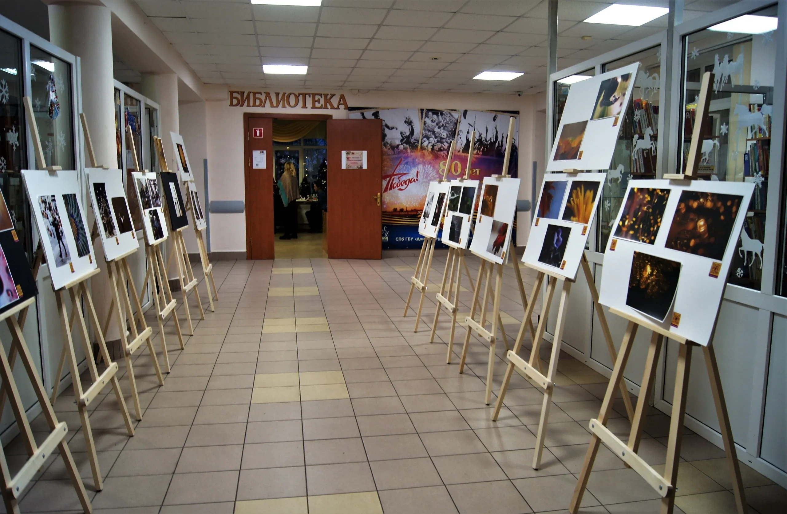

<!-- ===== ПРОЕКТ: ДВЕ ЛИНЗЫ, ОДИН СЮЖЕТ (Карточка-тизер) ===== -->
<section class="section fade-up" style="padding-top: 25px; padding-bottom: 20px;">
    <div class="container">
        <div class="section-title">Две линзы, один сюжет</div>
        <div class="section-subtitle">Совместная выставка в Парголовской библиотеке</div>
        <div class="project-card" style="position: relative; overflow: hidden;">
            
            <!-- ФОНОВОЕ ФОТО МЕРОПРИЯТИЯ -->
            <div style="position: absolute; top: 0; left: 0; width: 100%; height: 100%; z-index: 0; pointer-events: none;">
                
            </div>

            <!-- КОНТЕНТ ПОВЕРХ ФОНА -->
            <div style="position: relative; z-index: 1;">
                <h3>«Две линзы, один сюжет»</h3>
                <p>Совместная интерактивная выставка <strong>Галины Черняковой</strong> и <strong>Валерия Фролова</strong>.</p>
                <p style="margin-top: 8px;">Парголовская библиотека, Санкт-Петербург. 15–29 декабря 2025.</p>
                
                <div style="display: flex; flex-wrap: wrap; gap: 6px; margin-bottom: 20px; margin-top: 10px;">
                    <div class="badge">📍 Парголово, СПб</div>
                    <div class="badge">🤝 Совместный проект</div>
                    <div class="badge">📅 Декабрь 2025</div>
                </div>

                <!-- КНОПКА НА ОТДЕЛЬНУЮ СТРАНИЦУ -->
                <a href="dve_linzy.html" class="btn">Подробнее →</a>
            </div>
        </div>
    </div>
</section>